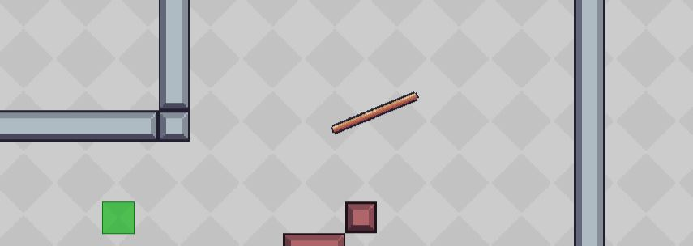
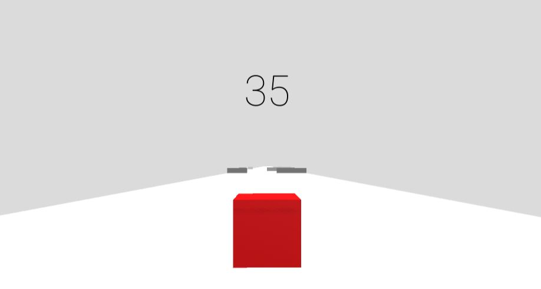
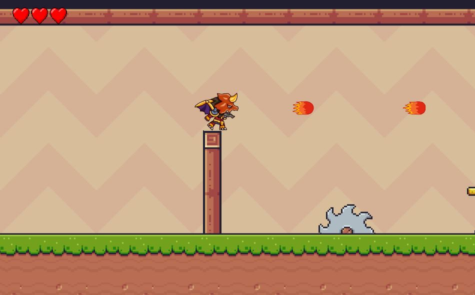
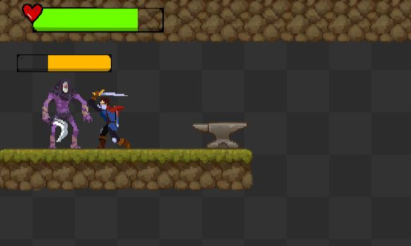
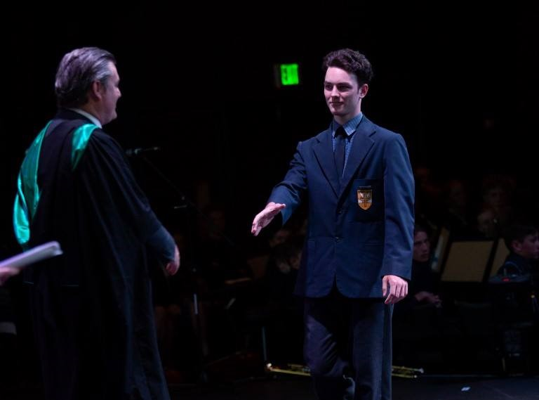
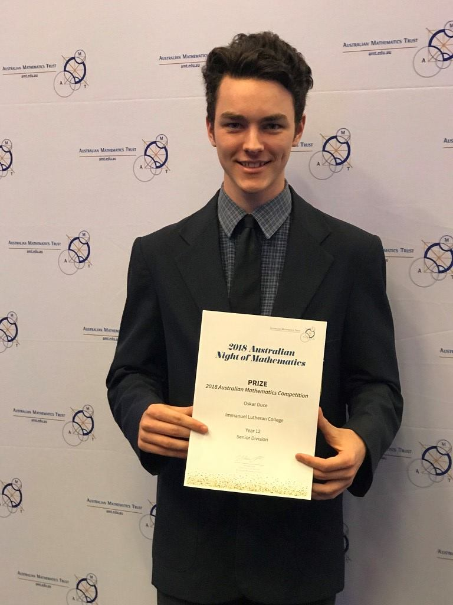
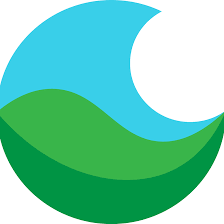
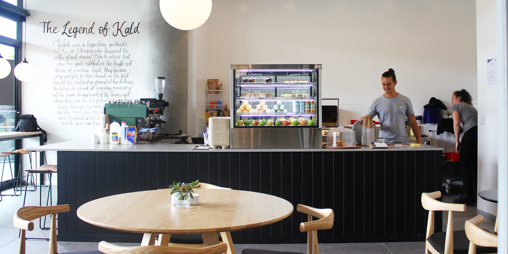

Projects
Bounce

Bounce represents a significant milestone for me as the first game I've fully completed. The gameplay involves rotating the player to bounce off walls based on their rotation, and I take pride in the accomplishment, finding it quite fun. Give it a go.
Cube-A-Thon

Cube-A-Thon stands as one of my early Unity creations. The objective is to navigate a red cube, dodging walls until you reach the end.
My First Platformer

This game marked my initiation into platformer development, guiding me through the coding intricacies of essential video game features such as jumping, gravity, wall hops, and shooting projectiles.
My Second Platformer

My second platformer experience, this game introduced me to concepts such as animations, hit boxes, health bars, and enemy AI.
Education
University of Queensland - Graduated 2023
I pursued a Bachelor of Mathematics with a focus on Statistics and a minor in Computer Science. This academic journey has equipped me with a comprehensive understanding of statistics while also gaining valuable insights in computer science. Along this path, I found a love for game development.
Immanuel Lutheran College - Class of 2018
As the college dux with an OP 1, I excelled in various subjects, including Maths, Advanced Maths, Physics, Chemistry, Accounting, and English. In my final year of school, I secured the top position in the class across Maths, Advanced Maths, Physics, and Accounting.

AUstralian Mathematics Trust AMC Prize Award 2018
In 2018, I participated in a nationwide Mathematics competition in Australia, securing the 3rd position in Queensland and achieving a ranking in the top 0.3% among all participants.

Work
Logisitics Coordinator - Lucent Globe
Feb 2023 to present
In my role, I managed the transportation of goods for timely and cost-effective delivery, overseeing inventory and collaborating with suppliers. I maintained accurate shipment records, communicated with carriers, and optimized routes for efficiency. I also assisted in selecting logistics providers, handled customs documentation, and resolved transportation disputes. Working closely with procurement and warehousing teams, I ensured a smooth supply chain operation.

Data Validator & Extractor - Solar Service Guys
Nov 2022 to Feb 2023
I used SQL to extract and validate customer contact data (email & phone) from the CRM database. After importing the email list into HubSpot, I set up and monitored an email campaign for the LG Recall and ACCC mandates. I addressed data discrepancies and errors, working with various teams. I also monitored and reported on data validation progress. Additionally, I contributed to the development of data validation protocols and participated in data quality improvement initiatives.

Barista - Kaldi Cafe and Bar
Mar 2019 to Nov 2022
As a barista, I skillfully crafted and served a variety of coffee beverages, ensuring high-quality standards and customer satisfaction. I maintained a clean and organized workspace, managed inventory, and restocked supplies as needed. Taking customer orders and handling transactions efficiently, I provided a friendly and welcoming atmosphere. Collaborating with the team, I contributed to a positive work environment and supported colleagues during busy periods. My focus on customer service, attention to detail, and ability to handle a fast-paced environment were key assets in delivering an exceptional coffee experience.

My Skills
Programming Languages
Python
C#
MatLab
C++
HTML
R
JavaScript
SQL
Java
Development Tools
Unity
Visual Studio
LaTeX
IntelliJ
Photoshop
Blender
Versioning Control
Github
Other
Excel